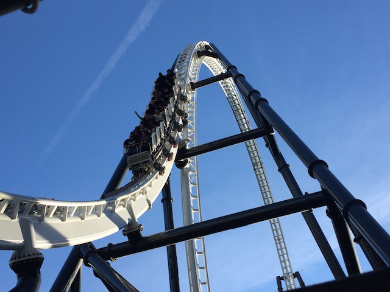
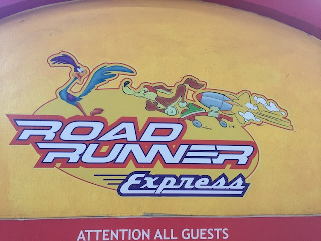
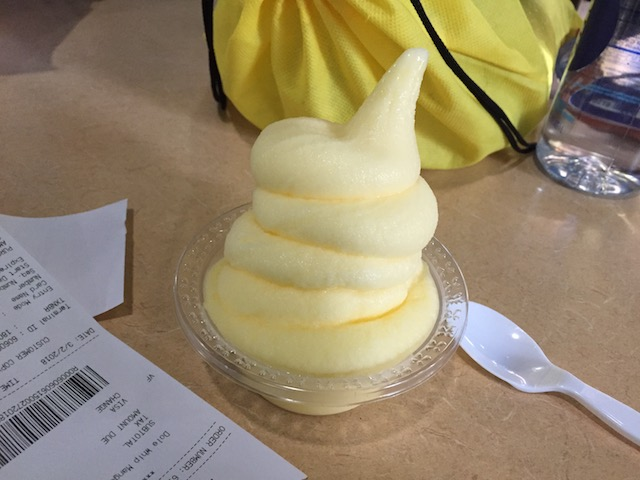
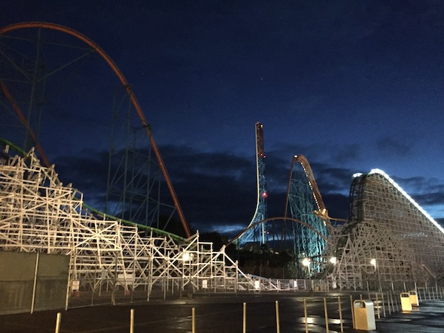

| |
Spring SFMM 2018
All right. Time for another SFMM update. We tend to visit a lot, given the close proximity to the park. And we figured, there's been enough trips and enough time to do a SFMM update at this point. So here's an update based on a couple Spring visits we took to SFMM, plus a bonus Winter update that we threw in there as well. =) Oh, and the Tidal Wave entrance has moved. I still am surprised that SFMM is still keeping Tidal Wave (for the time being).
I really hope that when SFMM redos the bumper cars for Crazanity, that they get rid of that stupid "One Way" rule. Seriously Magic Mountain. Please do so.
Speaking of Crazanity construction... =P
I know I rarely eat inside the park, but when you're with people from outside So-Cal who want to stay in the park, yeah. You do so. So here's Fresh Cut Fries. On the one hand, Nacho Fries are actually really good. They make a good lunch. But yeah. You're in a theme park and...HOW MUCH AM I PAYING FOR F*CKING FRENCH FRIES!!!?
Now you be a good boy Andrew and follow this sign. ;)
Get some exercise and take the stairs you lazy bums! We're not gonna contribute to obesity anymore (aside from the food that we serve)!!!
The fact that not only is Roaring Rapids open, but it has a line this long in January just baffles me! I'm so used to Roaring Rapids being a seasonal ride that closed after Fright Fest, and opened up again for Spring Break. And when Rapids closed then, they'd send me to either Viper, X2, or Bugs Bunny World since my ride was closed for the off season. But...now employees can be at P2 in the off season.
Speaking of the fact that it's January, I still see your Holiday in the Park decorations. I noticed that you took away all the blatent and obvious Christmas decorations and kept up the more subtle stuff, thinking that people wouldn't notice. Well some of us did. Now stop half-assing your Christmas decoration removal and take down ALL your decorations. We do notice those subtle decorations. =P
 Hmm. I see that the sign now says Classic Revolution instead of New Revolution. Does this mean that they're finally stopping the VR on Revolution!?
Hmm. I see that the sign now says Classic Revolution instead of New Revolution. Does this mean that they're finally stopping the VR on Revolution!?
Not sure how much longer this is gonna be necesarry.
 The VR on Revolution may have been fun, but the sheer fact that this ride will be ridable again thanks to not having horrendous waits makes this a great decision. =)
The VR on Revolution may have been fun, but the sheer fact that this ride will be ridable again thanks to not having horrendous waits makes this a great decision. =)
The Full Throttle promotions have always been...annoying for me. And yet, I've never been able to put my finger on it. I mean, they're showcasing roller coasters, surfing, skiing, cliff jumping, and all sorts of other extreme sports. This is the sort of sh*t that I love. I'm a huge coaster enthusiast (as demonstrated by this sites very existance), I absolutely love cliff jumping, and the other stuff they showcase looks fun too. I should be drooling over these promotions. And yet, despite being about everything I love, they've always annoyed me. At first, I thought it was just the fact that it was corporate. And to a certain extent, yeah. But...corporations have done this, and I absolutely love it. I mean, Red Bull may be a meh energy drink that I'm not a fan of, but they have my favorite advertising ever. I LOVE their marketing. So why do I love it when Red Bull does it, but am annoyed when Six Flags does it? Well, I think the reason I love Red Bull doing this, isn't just the fact that they show clips of people doing these awesome things. They actually host events. I mean, they reguarly have cliff diving events. No, not cliff jumping. Cliff diving. These people are freaking diving. They're professional divers. I may be able to jump off a 70 ft cliff, but I can't dive for sh*t. And they're diving from freaking 90 ft! They dive higher than I jump. And while 90 ft doesn't sound much worse from 70 ft, it's only an extra 20 ft. In the cliff jumping world, the higher you go, the more each foot matters. So that's a huge deal. And they're freaking diving! Yeah, they put me to shame. Not only does Red Bull put out amazing stuff like that, but I mean...they freaking had a person SKYDIVE FROM F*CKING SPACE!!!! I DON'T CARE THAT THEY DID IT TO PROMOTE THEIR CRAPPY ENERGY DRINK!!! THAT IS BADASS AND AMAZING!!!! Whereas Full Throttle, it does just feel like pandering and just playing peoples footage in a montage. Plus, I don't really like the song. It just feels fake. I think that's where my annoyance comes from. But...I guess I like that they're showing all sorts of cool stuff, even if it is fake.

You know Full Throttle is fun and all. I like it. But I'm constantly surprised by how much more everyone else seems to like it. I mean, it's good. But not great. I guess this is another coaster I can add to my Overrated List.
*gasp* I'm at Magic Mountain with an out of town credit whore! You know what that means!!! =D
Seeing Andrew whore out Speedy Gonzalas is amusing enough. But what was really f*cking hilarious was watching his non-coaster enthusiast roommate stare in horror at seeing his friend be a total credit whore.

I may already have this credit, but Vekoma Roller Skaters are fun. So I rode anyway, killing all the dignity I had by staying off Canyon Blaster & Speedy Gonzalas. Hey, I think you all know that I'm a credit whore as well.
And we finally end this visit to SFMM by going back to Rattlers. Seriously. This place is my favorite resteraunt in Valencia, and after our last time eating there 5 FREAKING YEARS AGO, we were WAY overdue to eat back here. And yeah. I love Rattlers. Hope I can manage to eat here again this year, cause it has really good food.
 All right. Visit #2. There's pretty much no photos. But hey. Andrew did come back to Six Flags Magic Mountain to finish off the one that got away last time. That's right. He came back for Tatsu. =P
All right. Visit #2. There's pretty much no photos. But hey. Andrew did come back to Six Flags Magic Mountain to finish off the one that got away last time. That's right. He came back for Tatsu. =P
Don't look too excited guys. Terminator may have just been re-tracked, and yet, SOMEHOW, it STILL shuffles! What the hell Six Flags!? >=(
Onto Visit #3. Well, it's cold, rainy, and gloomy. Hopefully this keeps crowds away.
Hey! Not only is Justice League a really good dark ride, but it's really good at keeping out the rain.
We at the Justice League will protect you all from Lex Luthor, the Joker, and rainfall.
 Justice League is fun and all, but I think it's time we did a major coaster now.
Justice League is fun and all, but I think it's time we did a major coaster now.
And we had perfect timing. For right after we rode, a couple trains later, Riddlers gets stuck on the midcourse brakes and guests had to evacuate down that spiral staircase. That was cool to watch.
Hmm. Wondering how Scrambler will fare when....HOLY SH*T!!! I'M TALKING ABOUT SCRAMBLER!!! WHEN WAS THE LAST TIME I GAVE THIS RIDE ANY THOUGHT!!!?

Just a friendly reminder that Six Flags does have Dole Whips. Yeah, they taste better at Disneyland and on the Disney Cruise Ships. But it's still a Dole Whip. And thus, freaking delicous.
Andrew! Dude! Stop! I know you're a major credit whore! But you're wasting your time! They AREN'T going to let you get the Percy credit! They won't even offer it during Westcoast Bash ERT! It's impossible to get if you didn't get it as a child (which I did. I have that credit, and you'll NEVER get it). For your own sake, just pretend that the ride doesn't exist.
I think you all remember just how much Logan LOVES Speedy Gonzalas. ;)
 It should be noted that we've been riding X2 throughout all these updates. Because despite all my traveling, that still is one of the best coasters ever.
It should be noted that we've been riding X2 throughout all these updates. Because despite all my traveling, that still is one of the best coasters ever.
"Have I mentioned that I love X2!? Cause I do! I love X2! It's amazing! That's why I'm buying this X2 Shirt! It's amazing! I give it a 10!"
 Hey look! Goliath finally opened up today! You'll get to ride it after all today.
Hey look! Goliath finally opened up today! You'll get to ride it after all today.

Thanks for another really fun day Six Flags Magic Mountain.
Oh wait. A friend from out of state is visiting California. You know the rules. ;)
And finally, we have reached Visit #4. I trekked out to Six Flags Magic Mountain on this random day for one main reason. Can you guess why?
Yep. Now Lex Luthor has the VR instead of Revolution. Now thank god this is just a temporary thing and that it'll be gone when the park gets busy for summer. Which is a good thing because MY GOD!!!! The capacity nightmare that is Lex Luthor with VR, my god! VR is pretty much what you do whenever you want to completely and totally knee-cap a rides capacity (There's a reason I didn't do the VR on Dare Devil Dive @ SFOG). I mean, Revolution with VR got lines that rivaled driving up to the Bay Area! That's f*cking insane! And Lex Luthor is even worse in capacity than Revolution. So I was terrified about the waits that this thing was going to produce. I was prepared to wait in this line all day since this is a temporary thing and I wasn't doing anything else exciting on this day off.
But luckily, Spring Break seems to be over, and the park was COMPLETELY DEAD today. Lex Luthor had NO line, and even with the VR, yeah. It added a little bit of time because...VR is a capacity nightmare. But that only made a walk on a 5 minute wait. Perfectly acceptable.
All right. Some comparisons between the Revolution VR and the Lex Luthor VR. Eh. Both are fun, but both are better without the VR, and each VR has its own upsides and flaws. On the upside for Lex Luthor VR, I MUCH prefer the Lex Luthor program where it's Lex Luthor dropping you and being saved by Wonder Woman. It fits with the "theme" of the ride. Whereas Revolution's VR was this weird sort of post-apocalypse shooting game. It sort of felt like playing Halo, and I just don't like first person shooter video games. I am not a fan of them. They personally are not my cup of tea, whereas, I do like the DC movies (Well, some of them. Some of them really are terrible). On the downsides of the Lex Luthor VR, the dialogue is really distracting. In the sense that...it's all just text! You have to read what Lex Luthor is saying to you. Same goes for Superman, Wonder Woman, you have to read. And...that takes you out of the mood. Especially when you're reading the text, and then you hear "Today is your lucky day. Today, your life changes forever. And this may be the high point of your insignificant existance! *evil laugh*". God damn it! Kind of ruins the whole thing. If you're gonna do this sort of VR, try having some headphones with it, so we can hear Lex Luthor actually say this stuff. Yeah, you heard the tunnel on Revolution, and the typical sounds. But at least you never had any sound to worry about. There was nothing to read on Revolution's VR. I guess I slightly prefer the Lex Luthor, but come on. Both are better in their natural form.
 Ooh! With the park this dead, I'm gonna get lots of Twisted rides today. =)
Ooh! With the park this dead, I'm gonna get lots of Twisted rides today. =)
And there's one thing that SFMM recently did that I have to praise them for. Those zippered pockets. They have them EVERYWHERE at the Disney parks, and the only other ride I've seen them on before this was New Texas Giant. Yep. The ONE good thing they had at Six Flags Over Texas, Magic Mountain decided to take and add on their own RMC. I absolutely love these things. I really hope that Six Flags can find a way to get these types of things on rides that aren't RMCs (And please tell me that it's not just SFOT & SFMM, and that Six Flags is doing this on ALL their RMCs).
 And that was another fun little short day at Six Flags Magic Mountain. I'm sure I'll have many more random fun days here, and of course, Crazanity will be fun to check out this summer.
And that was another fun little short day at Six Flags Magic Mountain. I'm sure I'll have many more random fun days here, and of course, Crazanity will be fun to check out this summer.
Home
|